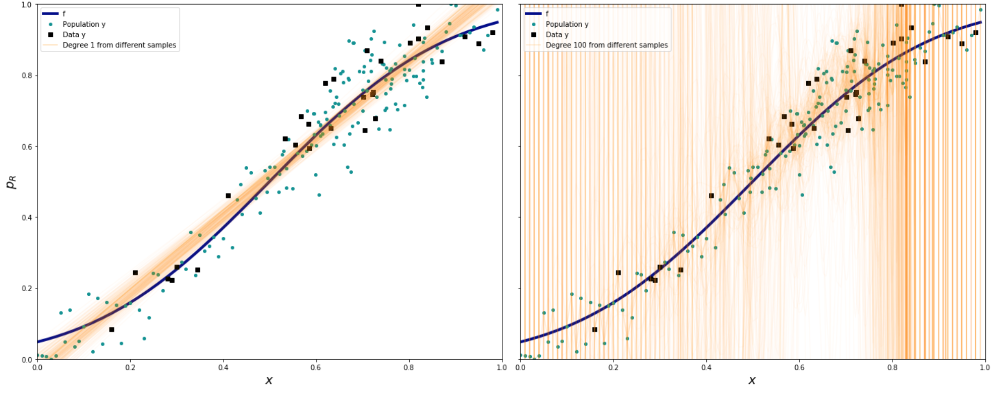

Key Word(s): Lasso, Ridge, Error, Bias, Variance, Regularization, Generalization
Title :¶
Exercise: Bias Variance Tradeoff
Description :¶
The aim of this exercise is to understand bias variance tradeoff. For this, you will fit a polynomial regression model with different degrees on the same data and plot them as given below.

Data Description:¶
Instructions:¶
- Read the file
noisypopulation.csvas a Pandas dataframe. - Assign the response and predictor variables appropriately as mentioned in the scaffold.
- Perform sampling on the dataset to get a subset.
- For each sampled version fo the dataset:
- For degree of the chosen degree value:
- Compute the polynomial features for the training
- Fit the model on the given data
- Select a set of random points in the data to predict the model
- Store the predicted values as a list
- For degree of the chosen degree value:
- Plot the predicted values along with the random data points and true function as given above.
Hints:¶
FUNCTION SIGNATURE: gen(degree, number of samples, number of points, x, y)
sklearn.PolynomialFeatures() Generates polynomial and interaction features
sklearn.LinearRegression() LinearRegression fits a linear model
sklearn.fit() Fits the linear model to the training data
sklearn.predict() Predict using the linear model.
Note: This exercise is auto-graded and you can try multiple attempts.
#Import necessary libraries
%matplotlib inline
import scipy as sp
import numpy as np
import pandas as pd
import matplotlib as mpl
import matplotlib.cm as cm
import matplotlib.pyplot as plt
from sklearn.linear_model import LinearRegression
from sklearn.preprocessing import PolynomialFeatures
# Helper function to define plot characteristics
def make_plot():
fig, axes=plt.subplots(figsize=(20,8), nrows=1, ncols=2);
axes[0].set_ylabel("$p_R$", fontsize=18)
axes[0].set_xlabel("$x$", fontsize=18)
axes[1].set_xlabel("$x$", fontsize=18)
axes[1].set_yticklabels([])
axes[0].set_ylim([0,1])
axes[1].set_ylim([0,1])
axes[0].set_xlim([0,1])
axes[1].set_xlim([0,1])
plt.tight_layout();
return axes
# Reading the file into a dataframe
df = pd.read_csv("noisypopulation.csv")
###edTest(get_data)###
# Set column x is the predictor and column y is the response variable.
# Column f is the true function of the given data
# Select the values of the columns
x = df.___
f = df.___
y = df.___
# Function to compute the Polynomial Features for the data x
# for the given degree d
def polyshape(d, x):
return PolynomialFeatures(___).fit_transform(___.reshape(-1,1))
# Function to fit a Linear Regression model
def make_predict_with_model(x, y, x_pred):
# Create a Linear Regression model with fit_intercept as False
lreg = ___
# Fit the model to the data x and y got parameters to the function
lreg.fit(___, ___)
# Predict on the x_pred data got as a parameter to this function
y_pred = lreg.predict(___)
# Return the linear model and the prediction on the test data
return lreg, y_pred
# Function to perform sampling and fit the data, with the following parameters
# degree is the maximum degree of the model
# num_sample is the number of samples
# size is the number of random points selected from the data for each sample
# x is the predictor variable
# y is the response variable
def gen(degree, num_sample, size, x, y):
# Create 2 lists to store the prediction and model
predicted_values, linear_models =[], []
# Loop over the number of samples
for i in range(num_sample):
# Helper code to call the make_predict_with_model function to fit on the data
indexes=np.sort(np.random.choice(x.shape[0], size=size, replace=False))
# lreg and y_pred hold the model and predicted values for the current sample
lreg, y_pred = make_predict_with_model(polyshape(degree, x[indexes]), y[indexes], polyshape(degree, x))
# Append the model and predicted values to the appropriate lists
predicted_values.append(___)
linear_models.append(___)
# Return the 2 lists, one for predicted values and one for the model
return predicted_values, linear_models
# Call the function gen() twice with x and y as the
# predictor and response variable respectively
# Set the number of samples to 200 and the number of points as 30
# Store the return values in appropriate variables
# Get results for degree 1
predicted_1, model_1 = gen(___);
# Get results for degree 100
predicted_100, model_100 = gen(___);
# Helper code to plot the data
indexes = np.sort(np.random.choice(x.shape[0], size=30, replace=False))
plt.figure(figsize = (12,8))
axes=make_plot()
# Plot for Degree 1
axes[0].plot(x,f,label="f", color='darkblue',linewidth=4)
axes[0].plot(x, y, '.', label="Population y", color='#009193',markersize=8)
axes[0].plot(x[indexes], y[indexes], 's', color='black', label="Data y")
for i,p in enumerate(predicted_1[:-1]):
axes[0].plot(x,p,alpha=0.03,color='#FF9300')
axes[0].plot(x, predicted_1[-1], alpha=0.3,color='#FF9300',label="Degree 1 from different samples")
# Plot for Degree 100
axes[1].plot(x,f,label="f", color='darkblue',linewidth=4)
axes[1].plot(x, y, '.', label="Population y", color='#009193',markersize=8)
axes[1].plot(x[indexes], y[indexes], 's', color='black', label="Data y")
for i,p in enumerate(predicted_100[:-1]):
axes[1].plot(x,p,alpha=0.03,color='#FF9300')
axes[1].plot(x,predicted_100[-1],alpha=0.2,color='#FF9300',label="Degree 100 from different samples")
axes[0].legend(loc='best')
axes[1].legend(loc='best')
plt.show();
⏸ Does changing the degree from 100 to 10 reduce variance? Why or why not?¶
### edTest(test_chow1) ###
# Submit an answer choice as a string below
answer1 = '___'